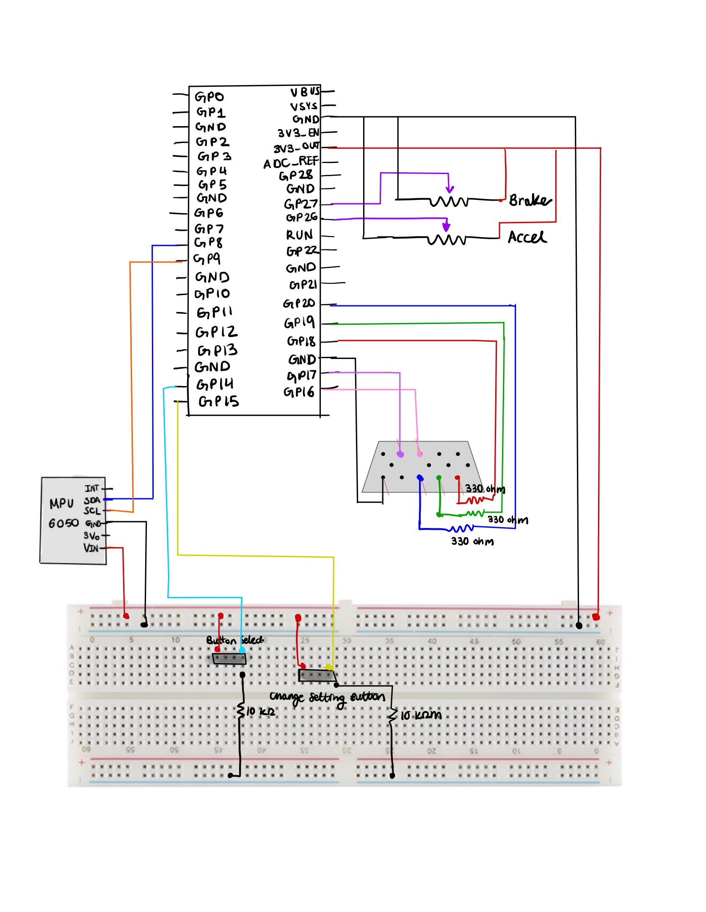

Welcome to our ECE 4760 Final Project GitHub Page!
Introduction
Our project was the development of a driving game where the user is given a course to drive over and has to try to complete the course in as quick a time as possible while avoiding the obstacles on the road.
There exists today many versions of racing games such as Mario Kart, Burnout, Gran Turismo, and many more. These games mimic what it's like to drive a car over a course. There are many variations of these driving games. However, every driving game has a wheel or some way of steering the car. Some additional features are pedals for acceleration and brake, a stick to change the gears, a device that causes vibrations for simulating rough terrain, and many other features. We were inspired by these games to create our own version of a racing game using the RP2040.
For our racing game, we used a steering wheel to control the direction the car moves and acceleration and brake pedals to control the speed of the car. The user is able to move the car right or left by using the steering wheel. The brake pedal slows the car and eventually stops the car so that the car is no longer moving and all visuals are paused until the pedal is released. The acceleration pedal makes the car move faster along the road the harder the pedal is pressed down. This also causes obstacles to move faster towards the driver. If the user hits an obstacle, the car is regenerated towards the left side of the screen and 5 seconds are added to the time. Depending on how fast the user finished the course, the user can either earn a bronze, silver, or gold ranking with bronze being the slowest time ranking and gold being the fastest time ranking.
We wanted to create a driving game that could be used for entertainment and to simulate driving a car. With the 3D aspects of the game like the dashed lines and objects on the roads getting bigger as they get closer, it really feels like the user is driving a car. The additions of rankings and times make the game a competition for the user to compete against friends, other players, and themselves.
High Level Design
Design Components
When we were first determining how to approach this project, we looked for interactive physical features that would make our game interesting.
- Wheel: We wanted to use an actual wheel instead of a remote to control the steering, so we used an old racing car wheel, which was a good size for our needs. We attached the IMU in order to measure the angle of the wheel.
- Pedals: We knew that we wanted to include pedals to simulate a real driving experience, so we used two potentiometer pedals for our brake and accelerator pedals.
- Buttons: We used two buttons, one to start the game and one to toggle between backgrounds. We wanted our game to feel like a game, so we attached these two buttons on a separate breadboard to feel like a game remote in a way, where there was a main button and a button to customize the aesthetic experience.
Logical Structure
The beginning screen allows the player to get adjusted and change the background aesthetic to their liking. When they are ready, the player presses the start button to begin the game.
When the game starts, the timer starts counting and the animation begins. The road lines start moving down and the obstacles spawn on the screen randomly one at a time. The car moves left and right on the bottom of the screen, controlled by the player’s steering. The objective of the game is to gain the fastest time, so part of that comes from avoiding obstacles and using the pedals strategically. Hitting an obstacle adds extra time, and the pedals control how fast the car moves, or rather the speed of the lines and obstacles. On the top of the screen is the time elapsed and the progress of the player, which is determined by the distance covered.
The game ends when the player has fully completed the distance, and the player’s time and ranking is displayed.
Software Design
Animation
Within our game, there were three moving parts that were being animated: the car, road lines, and obstacles.
Our car animation was handled by the drawCar() function, which had an input parameter that determined the amount of pixels the car should move in a certain direction. This input variable was added to a position variable, which was then used to determine where the car was being driven at. The coordinates of the car were limited to the edges of the road. As the car moves to the left or right, the right or left edge of the car is first erased and the entire car is redrawn at the current position of the car. Since the drawCar() function controlled the car’s position, it also checked if the car had bumped into an obstacle. In that case, the car would be redrawn to the left of the road. This drawCar() function was called in the animation protothread, where we were reading the angle of the wheel from the IMU and calling drawCar with various input values. Larger deviances from the neutral state resulted in stronger turns and therefore higher values, and if the wheel was turned to the left, the value was negative.
For the road lines, we had a line struct with a ready variable and various position and accumulator variables and an updateLine() function that animated each line. The line was drawn using a for loop that drew multiple lines increasing in width, which we accomplished by shifting the left and right coordinates by a small amount in the loop. After the for loop has finished running, the topmost line is erased. After the function has been called a certain number of times, which is tracked by the variable accum, the for loop condition is incremented, meaning that the height of the line increases. After the y position of the line passed the bottom edge of the screen, the position variables were reset and the ready variable was set to 0. By increasing the width and height of the line as the line moves down, we create the illusion of the line getting closer, which helps to achieve a 3D effect. We used two line struct instances in order to have two lines visible on the road, rather than only one line that was visible at a time. The updateLine() function was called in the VGA protothread, which animated the game states. Here we tracked each line’s ready variable and also set them. When a line was considered ready, the updateLine() function was called for that line struct instance, and when the current line’s y coordinate reached the middle of the road, the other line’s ready variable was set to 1, so that the lines were continuously animating.
Animating the obstacles was very similar to animating the lines, as it followed much of the same logic. For our obstacles, we also created an obstacle struct with additional variables for the color, height, and width. We created three instances of this obst struct, a small red one, a medium green one, and a large magenta one. With our obstacles, however, we wanted them to be able to slide to the sides of the road, since we noticed that animating them straight down didn’t cover the edges of the road. So, depending on whether the obstacle started on the left or right, the lines that were drawn by the for loop were shifted to the left or right, which resulted in obstacles being able to slide down in a diagonal direction. Similar to the line animation, the top line of the obstacle was erased, the height of the obstacle was incremented after the function has been called a certain number of times, and after the y position of the line passed the bottom edge of the screen, the position variables were reset and the ready variable was set to 0. The updateObst() was called in the VGA protothread, where we only animated the obstacles if they were ready, and the obstacle that was determined ready was randomized. The updateObst() function was also called in the drawCar() function, which tracked if the car’s coordinates were overlapping with any of the obstacles. If so, the obstacle was erased.
Game Modes
The beginning, playing, and ending screens were controlled by a finite state machine. A variable called “mode” was made to decide which state the game was currently in. There were three states “beginning_screen” which had a value of 0, “playing_state” which had a value of 1, and “ending_screen” which had a value of 2.
When the program is first run, the beginning screen appears. It consists of the sky, grass, and road being drawn. At the top of the screen, text is printed to tell the user to press the “Select” button to start the game. Once a button press is detected, the “game_state” variable switches from “beginning_screen” to the “playing_state”. A button press is detected by seeing if the value outputted by the button had toggled meaning that the current value outputted by the button does not equal to previous value outputted by the button.
Once the mode is set to the “playing_state”, all the animation would start. In order to get the animation to move at the proper times, all animation was put under an if statement stating that the animation would only run if “mode” was equal to “playing_state”. The animation would keep playing until 30 dashed lines in the road had gone off screen. This is the distance that we set for the length of the course the user would drive.
Once the user had traveled this distance, the game was over and the “mode” variable was set to the “ending_screen” variable. When the “mode” was equal to “ending_screen”, all animation stopped, the user’s rank was displayed on the top of the screen, and text at the top of the screen prompts the user to press the button again to play again. When a button press was detected again, “mode” was set to the “playing_state” variable and the animation started all over again.
Buttons
Two buttons were used for this project: one button to start the game called “Select” and the other button to change the setting called “Change Setting”. These buttons were initialized using the gpio_init() function and were both set to be inputs using the gpio_set_dir() function. The buttons only had two values: 1 for high and 0 for low. The function get_gpio() was able to read the value outputted by the button corresponding to the gpio that was inputted.
Each button did an action when the button was pressed. A button press was detected when the output of the button did not match what the output of the button was previously. When the user pressed the button, the button toggled between 1 and 0. In order to find out if the current value did not match the previous value of the button, the previous value was saved into a variable and updated after the current value was compared to the previous button value.
When the “Change Setting” button was pressed, the setting switched to the next setting. Settings changed from the day time setting to the sunset setting to the night time setting and then all over again. Since each setting corresponded to a number from 0 to 2, in order to change the setting, the number of button clicks were counted and then the modulo of the number of clicks and 3 was calculated. The calculated modulo gave which setting to display. When the “Select” button was pressed, the game would start if it was not in the “play_state” and the “mode” variable would be set to the “play_state”. All animation would start until the game was over.
Game Logic
The goal of the game was to finish the course in as quick a time as possible. There was a timer variable that was used to keep track of the time it took for the user to complete the course. It was incremented in a protothread that yielded for a second. This time was displayed as text on the screen.
If the car the user was controlling collided with an obstacle, the time increased by 5 seconds and the car was respawned to the left hand side of the screen and the obstacle was erased. A “+5” text was displayed in red underneath the time to indicate the five second addition. To erase the “+5 text”, every two seconds, a rectangle that was the color of the sky would be drawn where the “+5 text” would be generated. Collisions were checked by seeing if there was any overlap between the car and the obstacle that was currently on the screen. Overlap was calculated by first checking the height of the obstacle and seeing if it was at a height where collision was possible. If so, then the program checked to see if any of the corners of the obstacles were between the corners of the car. If there were, then there was a collision.
The distance the car had to travel until the end of the game was 30 dashed lines. There was a variable that kept track of how many dashed lines had gone off screen. While the game was playing, there was a progress text at the top that showed the user what percentage of the course the user has driven on so far. This was calculated by dividing the variable keeping track of the number of dashed lines by 100 and then multiplying by 100. Once the variable had reached 30, it changed the game mode to “ending_screen” and ended the game. The variable counting the number of dashed lines reset to 0.
At the end of the game, a ranking is displayed. This ranking is only displayed when the game ends which is ensured by putting all of the end game logic in a “while (mode == ending_screen)” loop. The ranking is calculated by the user’s ending time. If the time is less than 40 seconds, the user earned a gold ranking. If the time is between 40 and 70 seconds, the user earned a silver ranking. If the time is greater than 70 seconds, the user earned a bronze ranking. The ranking the user earned is printed onto the VGA screen at the end of the game.
Settings
In our game, we created three background settings to represent different times of the day. Our daytime background has a yellow sun with a radius of 50 pixels on the left corner of the screen, a cyan sky, and green grass. Our sunset background has a red sun in the middle of the screen. This sun has a radius of 80 pixels and sits where the road starts to give the illusion of the sun being on the horizon and looking bigger during sunsets. The sunset background has a magenta sky and blue colored grass, which is similar to the vaporwave aesthetic style. Our nighttime background has white moon with a radius of 50 pixels on the right corner of the screen, a blue sky, and green grass.
As the player progresses through the game, the setting changes to reflect the “time” passed, akin to a day road trip. Setting changes are cued based on distance, which is calculated by the amount of white lines that have passed on the road. The game starts off in the daytime setting by default, but players can change the starting setting by using the “Change Setting” button. No matter the starting setting, the settings will still cycle through in order.
Hardware Design
The pieces of hardware that we used in conjunction with the RP2040 MCU is the VGA driver to display the game animation on the monitor, the sliding potentiometers to make the animation faster or slower, and an IMU to control the left or right motion of the car/user. Since our hardware components recycled most of the devices used in previous labs we didn’t have much issues with hardware and if there was an issue it was because a wire was not connected.
Hardware Schematic:
RP2040 Microcontroller
The RP2040 microcontroller has a dual-core Arm Cortex-M0+ processor with 264 kilobytes of internal Random Access Memory (RAM) and support for up to 16 megabytes of off-chip flash, along with many Input/Output (I/O) options like Inter-Integrated Circuit (I2C), Serial Peripheral Interface (SPI), and a unique Programmable Input/Output (PIO). We access the RP2040 through the Raspberry Pi Pico development board, and we utilize the microcontroller to interact with the IMU, two sliding potentiometers, two buttons, and VGA display.
Buttons
Our design has two buttons with different functions. The select button is used to start the game and transition from either the starting or ending screen to play the game. It is connected to GPIO pin 14 and the 3.3V output on the Pico. At the same button pin where the GPIO pin was connected, we also connected a 10KΩ resistor to ground to act as a pulldown resistor. Additionally, we have a change setting button which toggles between different settings of the driving game from daytime, sunset, and nighttime and has similar connections to the select button except it is connected to GPIO 15.
VGA
In order to write the pixels on the screen at the rate of 25 mHz which is approximately the value the VGA clock runs at, at each rising of the clock we have to change the voltage of the R/G/B color pins. Since the R/G/B pins are analog, the range of voltage values accepted are 0-0.7 V. In order to meet this range, we used 330 ohm resistors between the R/G/B GPIO pins and the VGA connector to create a voltage divider since there’s a 70 ohm resistor to ground. Since we are using 3 bits for color, our color palette has a range of 8 colors. We use the Hysnc, Vsync, R/G/B signals to draw pixels line by line on the VGA display by using PIO state machines (SM) 0, 1, and 2 on PIO instance 0 (PIO 0 being the hysnc generator, PIO 1 vsync, and PIO 2 as R/G/B). We also used one DMA channel to communicate pixel data in a global character array called vga_data_array to the R/G/B PIO state machine paced by a DREQ_PIO0_TX2 data request signal. And the second DMA channel that is connected to the first one functions as a way to restart and reconfigure the first channel by writing a pointer to the start address of the first DMA channel’s read_adress register.
IMU/MPU 6050
Our MPU 6050 is used to control the turning motion of the car, and is attached to the top of the wheel. This allowed for the same axis used in our Lab 3. The Pico communicated with the IMU using an I2C channel, where there is one shared clock line and one shared data line. The IMU is a 6-axis motion tracking device that combines a 3-axis gyroscope, 3-axis accelerometer, and a Digital Motion Processor (DMP). We connected the IMU’s SDA, or shared data, to GPIO 8 of the Pico and the IMU’s SCL, or shared clock, to GPIO 9 of the Pico. To power the IMU we connect the VIn pin to power and the GND pin to GND of the breadboard.
Sliding Potentiometers
Thanks to a previous final project (we are not sure whose project it was), we used sliding pentameters moved by springs acting as our gas and brake pedals. Using GPIO 26 and 27 to read the analog pin of each of the potentiometers, we were able to get ADC voltage measurements that varied depending on how hard you pressed on the pedal. We connected each of the potentiometers to power and ground on our bread board as well.
Results of the design
Video Overview:
Through building our driving game, we test mainly through the eye and how the animation and hardware responded with human interaction. We also displayed variable values on the PuTTy to resolve any issues. However, the most frequent issue we have encountered was the flicker of some animation objects particularly the car. We realized that the VGA handles about 60 samples/frames per second but we were trying sample 1000 because we reuse code from our Lab 3 to move the car using an IMU. Therefore, we modified our PWM frequency using the formula shown below
PWM frequency= System Clock/Clock Divider×Wrap Value
In order to get an ideal PWM frequency of around 60 hz we guessed the values for clock divider and wrap value since the system clock was set to 250 Mhz. Thanks to the help of Bruce we chose the clock divider to be 75 and the wrap value to 50000. This allowed us to get to the frequency of 66.0 hz. In addition, we switched our interrupt service routine to a thread since we were dealing with human feedback.
Throughout this final project, we learn the importance of yielding of threads and making sure that threads yield otherwise certain parts of the animation will not run. We did not have a direct way of calculating the yield time but changed the values accordingly based on our animation speed. We also made sure all the animation was on one core to prevent mismatching of timing. Per frame we have 200 uS in between resulting in our animation being very smooth. Overall, we’re really proud of how our results turned out.
We enforced safety in our design by making sure all the wires and breadboard components faced away from the pedals and were on the ground. That way the person playing will not have to worry about stepping on any electrical wires. This design is usable by anyone of all ages and it’s a great way to have fun!
Conclusions
Reflection
Overall, our project worked successfully. We were able to create a working and animated driving game that simulated driving a car. The wheel functioned as intended and moved the car on the screen while the acceleration pedal sped up the card and the brakes stopped the car from moving. We even added buttons to start the game and change the background to either a day, dawn, or nighttime setting.
Expectations
When we first came up with the idea for this project, we had many ideas and expectations. One expectation that we had was being able to add turns to the road so that the course was not one straight path for the user. The user would have to complete the course in as quick as a time as possible. The car would follow the direction of the wheel and the user would have to turn the wheel so that the car did not go off the track. When a car got off the track, the car would regenerate onto the path and would be paused for a few seconds as a penalty. Acceleration and brake pedals were also planned to be added to help the user control the car’s speed. The visuals would be seen with one-point perspective of a person behind the car. Another expectation we had was adding a second player to the game so that two users could verse each other in the game and one player would be declared a winner.
Reality
In reality, the game turned out much differently. For example, we did not expect animating to be as difficult as it turned out to be. Animating the dashed lines in the road so that they got closer to the driver as the user was driving and having the lines gradually get bigger as they get closer proved to be more difficult than anticipated. Getting the animation to be smooth while also getting the lines to be the right size was not easy. If the dashed lines were increasing too much as they went down the screen, they would get too big. However, if they did not grow enough, they would look like they were the same the entire time and it would not give the effect of a car driving on the road. Additionally, the lines could not be erased and redrawn or else they would appear to be flashing or blinking as they were moving down the road. Instead, the top of the dashed line had to be erased and the bottom of the dashed line had to be extended in order to appear like the dashed line was moving down.
The car was also difficult to animate. A flashy/blinking effect was caused when the car was erased and redrew to reposition the car according to the wheel position. Instead of redrawing the car completely, a few pixels of the opposite the car was moving would be erased and pixels would be drawn on the side the car was moving in order for the car to appear like it was moving. However, there was a window on the car that was constantly being redrawn every time the car was moving. Therefore, when the car was moving, the entire car didn’t appear flashy/blinky, only the window.
Turns were tough to add to the game. The first reason is because of the perspective we chose. With the one-point perspective, drawing any turns were difficult to make on the VGA. Second reason is animation. We had spent a lot of time trying to figure out animation on a straight path. Animating on a curved or windy path proved to be a lot more difficult and would require more time and a lot more code in order to get it to look visually accurate. Therefore, instead of adding turns in the road, to add challenges to the game we decided to add obstacles in the road. Although obstacles in the road were not originally intended to be part of the game, they were a fun addition as they made the game a lot more challenging and added a new goal for users: avoid as many obstacles as possible.
It was difficult to add a second person. Three of the biggest challenges were supplies, how to do perspective with two players, and time. In order to have two people playing, there needed to be two of each supply: two steering wheels and two sets of brake and accelerator pedals. This was costly and we had limited supplies. Additionally, we needed to figure out how the perspective would look like with two players. Would one player’s perspective be seen from the top part of the screen and the other’s be seen at the bottom? What would happen if one player passed the other and what would that look like visually? What would happen if the players crashed into one another? Finding an answer to these questions and figuring out the logic for this proved to be really difficult. We wanted to start with being able to get a game where one user is driving and if we had time and the supplies, find the logic to get two people driving. In the end, we chose to prioritize spending time on other aspects of the game than adding a second player as we felt that adding a second player was not necessary for the game functionality.
Where can this go in the future and further improvements
One feature that we could add to improve our game is things in the background. For example, trees could be added to the sides of the track that get bigger as they get closer until they are off screen. Also, a plane or a bird could fly across the screen and clouds can be added to the sky. More visuals could add to the experience of traveling a distance and could be visually appealing to the user.
We could also use a Digital to Analog (DAC) converter to create noises as the user plays the game to add to the driving simulation. For example, the sound of an engine could be played when the car is driving and when the car crashes into an obstacle in the round, there could be a crashing sound outputted by the DAC. A horn could also be added by using a button and a DAC. When the button is pressed, a honking noise could be outputted.
Lastly, we could figure out a way to get the blinking of the car window to be fixed. Maybe this could be done by drawing yellow over a part of the opposite side the car is moving and extending the window a pixel to the side that the car is moving so that the window appears as if it has shifted. Another solution is maybe using bit mapping to help with the animation and maybe make it smoother.
What was reused
There were some aspects of the project that were reused. For example, the brake and acceleration pedals were reused from a project years ago. It was two pedals attached to a cork board and each pedal had a potentiometer attached to it to read a different voltage depending on how hard the pedal was pressed. Additionally, the steering wheel was borrowed from the Cornell Racing project team. This was added to add to the experience of the game and further simulate driving a car. We also reused the gyroscope and accelerometer angle calculation algorithm from Lab 3 in order to get the position of the wheel and figure out how far the user turned the wheel. No code, however, was used from the public domain. We did not have to sign a non disclosure agreement. Since the game is so similar to many other preexisting racing games and it utilized parts that were not designed by us (like the steering wheel), the game is not patentable.
Apendix A (permissions)
"The group approves this report for inclusion on the course website."
"The group approves the video for inclusion on the course youtube channel."
Apendix B: Code
The complete commented code files can be found here: link
Apendix C: Work Distribution
- We mainly worked on the majority of the project together during our Thursday lab hours and during open lab hours.
- Daniela: Mainly worked on designing the logic for the animation and worked with using the IMU to control the car. Also helped with debugging software and configuring the buttons.
- Yunnie: Focused on designing the animation and the different settings for the game. She also organized our code and utilized structs and functions to update our animations. Also helped with debugging the software as well.
- Sherri: Mainly focused on debugging software, drawing the original background, helping with animation, and configuring the hardware for reading the ADC values from the pedals.
Apendix D: Resources
We didn’t really use any resources aside from the course webpage, but are so grateful for all the people who helped us complete our project which includes Professor Adams, Professor Land, and the TAs :)
Apendix E: Budget/Vendor Sites
| Part | Cost | Vendor | Link |
|---|---|---|---|
| Raspberry Pi Pico | $4.00 | Digikey | link |
| MPU 6050 | $12.95 | Adafruit | link |
| Sliding Potentiometer: RS301111J00J | 0.98 x 2 = $1.96 | Mouser | link |
| Miscellaneous: Resistors | Varies | Amazon/Any vendor | N/A |